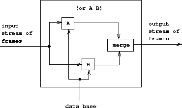

|
No capítulo 1, enfatizamos que a ciência da computação lida com o conhecimento imperativo (como), enquanto a matemática lida com o conhecimento declarativo (o que é). De fato, as linguagens de programação exigem que o programador expresse conhecimento de uma forma que indique os métodos passo a passo para resolver problemas específicos. Por outro lado, as linguagens de alto nível fornecem, como parte da implementação da linguagem, uma quantidade substancial de conhecimento metodológico que libera o usuário da preocupação com inúmeros detalhes de como uma computação especificada progredirá.
A maioria das linguagens de programação, incluindo Lisp, é organizada em torno da computação dos valores das funções matemáticas. Linguagens orientadas a expressões (como Lisp, Fortran e Algol) capitalizam o “trocadilho” de que uma expressão que descreve o valor de uma função também pode ser interpretada como um meio de calcular esse valor. Por esse motivo, a maioria das linguagens de programação é fortemente influenciada por cálculos unidirecionais (cálculos com entradas e saídas bem definidas). Existem, no entanto, linguagens de programação radicalmente diferentes que relaxam esse viés. Vimos um exemplo na seção 3.3.5, onde os objetos de computação eram restrições aritméticas. Em um sistema de restrição, a direção e a ordem de cálculo não são tão bem especificadas; ao realizar um cálculo, o sistema deve, portanto, fornecer um conhecimento mais detalhado do “como fazer” do que seria o caso de um cálculo aritmético comum. Isso não significa, no entanto, que o usuário esteja totalmente liberado da responsabilidade de fornecer conhecimento imperativo. Existem muitas redes de restrições que implementam o mesmo conjunto de restrições, e o usuário deve escolher no conjunto de redes matematicamente equivalentes uma rede adequada para especificar uma computação específica.
O avaliador não determinístico do programa da seção 4.3. também se afasta da visão de que a programação é sobre a construção de algoritmos para calcular funções unidirecionais. Em uma linguagem não determinística, as expressões podem ter mais de um valor e, como resultado, o cálculo é lidar com relações e não com funções de valor único. A programação lógica estende essa ideia combinando uma visão relacional da programação com um tipo poderoso de correspondência de padrões simbólicos chamada unificação.58
Essa abordagem, quando funciona, pode ser uma maneira muito poderosa de escrever programas. Parte do poder vem do fato de que um único fato “o que é” pode ser usado para resolver vários problemas diferentes que teriam componentes diferentes de “como fazer”. Como exemplo, considere a operação append, que recebe duas listas como argumentos e combina seus elementos para formar uma única lista. Em uma linguagem processual como Lisp, poderíamos definir append em termos do construtor de lista básico cons, como fizemos na seção 2.2.1:
(define (append x y)
(if (null? x)
y
(cons (car x) (append (cdr x) y))))
Esse procedimento pode ser considerado como uma tradução para o Lisp das duas regras a seguir, a primeira abordando o caso em que a primeira lista está vazia e a segunda tratando o caso de uma lista não vazia, que é uma cons de duas partes:
Usando o procedimento append, podemos responder a perguntas como
Encontre o append do (a b) e (c d).
Mas as mesmas duas regras também são suficientes para responder aos seguintes tipos de perguntas, que o procedimento não pode responder:
Encontre uma lista y aquele append s com (a b) para produzir (a b c d).Encontre todo x e y aquele append formar (a b c d).
Numa linguagem de programação lógica, o programador escreve um append “Procedimento” declarando as duas regras sobre append dado anteriormente. O conhecimento de “como fazer” é fornecido automaticamente pelo interpretador para permitir que este único par de regras seja usado para responder aos três tipos de perguntas sobre append.60
As linguagens de programação lógica contemporânea (incluindo a que implementamos aqui) possuem deficiências substanciais, pois seus métodos gerais de “como fazer” podem levá-los a laços infinitos espúrios ou outro comportamento indesejável. A programação lógica é um campo ativo de pesquisa em ciência da computação.61
No início deste capítulo, exploramos a tecnologia de implementação de interpretadores e descrevemos os elementos essenciais para um interpretador para uma linguagem do tipo Lisp (de fato, para um interpretador para qualquer linguagem convencional). Agora, aplicaremos essas ideias para discutir um interpretador para uma linguagem de programação lógica. Chamamos essa linguagem de linguagem de consulta, pois é muito útil para recuperar informações de bancos de dados, formulando consultas, ou perguntas, expressas na linguagem. Mesmo que a linguagem de consulta seja muito diferente da Lisp, acharemos conveniente descrever a linguagem em termos da mesma estrutura geral que usamos desde o início: como uma coleção de elementos primitivos, com meios de combinação que nos permitem combine elementos simples para criar elementos mais complexos e meios de abstração que nos permitam considerar elementos complexos como unidades conceituais únicas. Um interpretador para uma linguagem de programação lógica é consideravelmente mais complexo que um interpretador para uma linguagem como Lisp. No entanto, veremos que nosso interpretador de linguagem de consulta contém muitos dos mesmos elementos encontrados no interpretador da seção 4.1. Em particular, haverá uma parte “eval” que classifica expressões de acordo com o tipo e uma parte “apply” que implementa o mecanismo de abstração da linguagem (procedimentos no caso do Lisp e regras no caso de programação lógica). Além disso, um papel central é desempenhado na implementação por uma estrutura de dados de quadro, que determina a correspondência entre símbolos e seus valores associados. Um aspecto adicional interessante de nossa implementação em linguagem de consulta é que fazemos uso substancial de fluxos, que foram introduzidos no capítulo 3.
A programação lógica é excelente ao fornecer interfaces para bancos de dados para recuperação de informações. A linguagem de consulta que implementaremos neste capítulo foi projetada para ser usada dessa maneira.
Para ilustrar o que o sistema de consulta faz, mostraremos como ele pode ser usado para gerenciar a base de dados de registradores de pessoal para Microshaft, uma próspera empresa de alta tecnologia na área de Boston. A linguagem fornece acesso orientado a padrões para informações pessoais e também pode tirar proveito das regras gerais para fazer deduções lógicas.
A base de dados de pessoal da Microshaft contém asserções sobre o pessoal da empresa. Aqui estão as informações sobre Ben Bitdiddle, o assistente de computador residente:
(address (Bitdiddle Ben) (Slumerville (Ridge Road) 10))
(job (Bitdiddle Ben) (computer wizard))
(salary (Bitdiddle Ben) 60000)
Cada asserção é uma lista (neste caso, uma tripla) cujos elementos podem ser listas.
Como assistente residente, Ben é responsável pela divisão de computadores da empresa e supervisiona dois programadores e um técnico. Aqui estão as informações sobre eles:
(address (Hacker Alyssa P) (Cambridge (Mass Ave) 78))
(job (Hacker Alyssa P) (computer programmer))
(salary (Hacker Alyssa P) 40000)
(supervisor (Hacker Alyssa P) (Bitdiddle Ben))
(address (Fect Cy D) (Cambridge (Ames Street) 3))
(job (Fect Cy D) (computer programmer))
(salary (Fect Cy D) 35000)
(supervisor (Fect Cy D) (Bitdiddle Ben))
(address (Tweakit Lem E) (Boston (Bay State Road) 22))
(job (Tweakit Lem E) (computer technician))
(salary (Tweakit Lem E) 25000)
(supervisor (Tweakit Lem E) (Bitdiddle Ben))
Há também um estagiário programador, supervisionado por Alyssa:
(address (Reasoner Louis) (Slumerville (Pine Tree Road) 80))
(job (Reasoner Louis) (computer programmer trainee))
(salary (Reasoner Louis) 30000)
(supervisor (Reasoner Louis) (Hacker Alyssa P))
Todas essas pessoas estão na divisão de computadores, conforme indicado pela palavra computer como o primeiro item em suas descrições de cargo.
Ben é um funcionário de alto nível. Seu supervisor é a grande roda da empresa:
(supervisor (Bitdiddle Ben) (Warbucks Oliver))
(address (Warbucks Oliver) (Swellesley (Top Heap Road)))
(job (Warbucks Oliver) (administration big wheel))
(salary (Warbucks Oliver) 150000)
Além da divisão de computadores supervisionada por Ben, a empresa possui uma divisão de contabilidade, composta por um contador principal e seu assistente:
(address (Scrooge Eben) (Weston (Shady Lane) 10))
(job (Scrooge Eben) (accounting chief accountant))
(salary (Scrooge Eben) 75000)
(supervisor (Scrooge Eben) (Warbucks Oliver))
(address (Cratchet Robert) (Allston (N Harvard Street) 16))
(job (Cratchet Robert) (accounting scrivener))
(salary (Cratchet Robert) 18000)
(supervisor (Cratchet Robert) (Scrooge Eben))
Há também uma secretária para a grande roda:
(address (Aull DeWitt) (Slumerville (Onion Square) 5))
(job (Aull DeWitt) (administration secretary))
(salary (Aull DeWitt) 25000)
(supervisor (Aull DeWitt) (Warbucks Oliver))
O banco de dados também contém afirmações sobre quais tipos de trabalhos podem ser realizados por pessoas que possuem outros tipos de trabalhos. Por exemplo, um assistente de computador pode fazer os trabalhos de um programador de computador e de um técnico de computador:
(can-do-job (computer wizard) (computer programmer))
(can-do-job (computer wizard) (computer technician))
Um programador de computador poderia preencher um estagiário:
(can-do-job (computer programmer)
(computer programmer trainee))
(can-do-job (administration secretary)
(administration big wheel))
A linguagem de consulta permite que os usuários recuperem informações da base de dados, fazendo consultas em resposta à solicitação do sistema. Por exemplo, para encontrar todos os programadores de computador, pode-se dizer
;;; Query input:
(job ?x (computer programmer))
O sistema responderá com os seguintes itens:
;;; Query results:
(job (Hacker Alyssa P) (computer programmer))
(job (Fect Cy D) (computer programmer))
A consulta de entrada especifica que procuramos entradas no banco de dados que correspondam a um determinado padronizar. Neste exemplo, o padrão especifica entradas que consistem em três itens, dos quais o primeiro é o símbolo literal job, o segundo pode ser algo e o terceiro é a lista literal (computer programmer). “Algo” que possa ser o segundo item na lista correspondente é especificado por uma variável de padrão, ?x. A forma geral de uma variável padrão é um símbolo, considerado o nome da variável, precedido por um ponto de interrogação. Veremos abaixo por que é útil especificar nomes para variáveis padrão em vez de apenas colocar ? em padrões para representar “algo”. O sistema responde a uma consulta simples, mostrando todas as entradas na base de dados que correspondem ao padrão especificado.
Um padrão pode ter mais de uma variável. Por exemplo, a consulta
(address ?x ?y)
listará todos os endereços dos funcionários.
Um padrão não pode ter variáveis; nesse caso, a consulta simplesmente determina se esse padrão é uma entrada no banco de dados. Nesse caso, haverá uma correspondência; caso contrário, não haverá correspondências.
A mesma variável padrão pode aparecer mais de uma vez em uma consulta, especificando que o mesmo “algo” deve aparecer em cada posição. É por isso que as variáveis possuem nomes. Por exemplo,
(supervisor ?x ?x)
encontra todas as pessoas que se supervisionam (embora não exista essa afirmação em nosso banco de dados de amostra).
A pergunta
(job ?x (computer ?type))
corresponde a todas as entradas de trabalho cujo terceiro item é uma lista de dois elementos cujo primeiro item é computer:
(job (Bitdiddle Ben) (computer wizard))
(job (Hacker Alyssa P) (computer programmer))
(job (Fect Cy D) (computer programmer))
(job (Tweakit Lem E) (computer technician))
Este mesmo padrão não corresponde
(job (Reasoner Louis) (computer programmer trainee))
porque o terceiro item na entrada é uma lista de três elementos e o terceiro item do padrão especifica que deve haver dois elementos. Se quisermos alterar o padrão para que o terceiro item possa ser qualquer lista que comece com computer, poderíamos especificar62
(job ?x (computer . ?type))
Por exemplo,
(computer . ?type)
corresponde aos dados
(computer programmer trainee)
com ?type como a lista (programmer trainee). Igualmente combina os dados
(computer programmer)
com ?type como a lista (programmer), e corresponde aos dados
(computer)
com ?type como a lista vazia ().
Podemos descrever o processamento de consultas simples da linguagem de consulta da seguinte maneira:
Observe que, se o padrão não tiver variáveis, a consulta será reduzida para determinar se esse padrão está no banco de dados. Nesse caso, a atribuição vazia, que não atribui valores a variáveis, satisfaz esse padrão para esse banco de dados.
Exercício 4.55. Faça consultas simples que recuperam as seguintes informações do banco de dados:
a. todas as pessoas supervisionadas por Ben Bitdiddle;
b. os nomes e empregos de todas as pessoas na divisão contábil;
c. os nomes e endereços de todas as pessoas que vivem em Slumerville.
Consultas simples formam as operações primitivas da linguagem de consulta. Para formar operações compostas, a linguagem de consulta fornece meios de combinação. Algo que torna a linguagem de consulta uma linguagem de programação lógica é que os meios de combinação refletem os meios de combinação usados na formação de expressões lógicas: and, or e not. (Aqui and, or e not não são as primitivas do Lisp, mas operações integradas na linguagem de consulta).
Podemos usar and a seguir para encontrar os endereços de todos os programadores de computador:
(and (job ?person (computer programmer))
(address ?person ?where))
A saída resultante é
(and (job (Hacker Alyssa P) (computer programmer))
(address (Hacker Alyssa P) (Cambridge (Mass Ave) 78)))
(and (job (Fect Cy D) (computer programmer))
(address (Fect Cy D) (Cambridge (Ames Street) 3)))
(and <query1> <query2> ... <queryn>)
é satisfeito por todos os conjuntos de valores para as variáveis padrão que satisfazem simultaneamente <query1> … <queryn>.
Quanto às consultas simples, o sistema processa uma consulta composta localizando todas as atribuições às variáveis de padrão que atendem à consulta e exibindo instanciações da consulta com esses valores.
Outro meio de construir consultas compostas é através de or. Por exemplo,
(or (supervisor ?x (Bitdiddle Ben))
(supervisor ?x (Hacker Alyssa P)))
encontrará todos os funcionários supervisionados por Ben Bitdiddle ou Alyssa P. Hacker:
(or (supervisor (Hacker Alyssa P) (Bitdiddle Ben))
(supervisor (Hacker Alyssa P) (Hacker Alyssa P)))
(or (supervisor (Fect Cy D) (Bitdiddle Ben))
(supervisor (Fect Cy D) (Hacker Alyssa P)))
(or (supervisor (Tweakit Lem E) (Bitdiddle Ben))
(supervisor (Tweakit Lem E) (Hacker Alyssa P)))
(or (supervisor (Reasoner Louis) (Bitdiddle Ben))
(supervisor (Reasoner Louis) (Hacker Alyssa P)))
Em geral,
(or <query1> <query2> ... <queryn>)
é satisfeito por todos os conjuntos de valores para as variáveis padrão que satisfazem, pelo menos, um dos <query1> … <queryn>.
Consultas compostas também podem ser formadas com não. Por exemplo,
(and (supervisor ?x (Bitdiddle Ben))
(not (job ?x (computer programmer))))
encontra todas as pessoas supervisionadas por Ben Bitdiddle que não são programadores de computador. Em geral,
(not <query1>)
é satisfeito por todas as atribuições para as variáveis de padrão que não satisfazem <query1>.63
O formulário final de combinação é chamado lisp-value. Quando lisp-value é o primeiro elemento de um padrão, especifica que o próximo elemento é um predicado Lisp a ser aplicado ao restante dos elementos (instanciados) como argumentos. Em geral,
(lisp-value <predicate> <arg1> ... <argn>)
será atendido por atribuições para as variáveis de padrão para as quais <predicate> aplicado ao instanciado <arg1> … <argn> é verdade. Por exemplo, para encontrar todas as pessoas cujo salário é superior a $30.000, poderíamos escrever 64
(and (salary ?person ?amount)
(lisp-value > ?amount 30000))
Exercício 4.56. Formule consultas compostas que recuperam as seguintes informações:
a. os nomes de todas as pessoas supervisionadas por Ben Bitdiddle, com seus endereços;
b. todas as pessoas cujo salário é inferior ao de Ben Bitdiddle, com o salário e o salário de Ben Bitdiddle;
c. todas as pessoas supervisionadas por alguém que não está na divisão de computadores, com o nome e o cargo do supervisor.
Além das consultas primitivas e compostas, a linguagem de consulta fornece meios para abstrair consultas. Estes são dados por regras. A regra
(rule (lives-near ?person-1 ?person-2)
(and (address ?person-1 (?town . ?rest-1))
(address ?person-2 (?town . ?rest-2))
(not (same ?person-1 ?person-2))))
especifica que duas pessoas moram próximas uma da outra se moram na mesma cidade. O final not Esta cláusula impede a regra de dizer que todas as pessoas vivem perto de si. o same relação é definida por uma regra muito simples:65
A regra a seguir declara que uma pessoa é uma “roda” em uma organização se ela supervisiona alguém que por sua vez é um supervisor:
(rule (wheel ?person)
(and (supervisor ?middle-manager ?person)
(supervisor ?x ?middle-manager)))
A forma geral de uma regra é
(rule <conclusion> <body>)
onde <conclusion> é um padrão e <body> é qualquer consulta.66 Podemos pensar em uma regra como representando um grande (até infinito) conjunto de asserções, ou seja, todas as instanciações da conclusão da regra com atribuições variáveis que satisfazem o corpo da regra. Quando descrevemos consultas simples (padrões), dissemos que uma atribuição às variáveis satisfaz um padrão se o padrão instanciado estiver no banco de dados. Mas o padrão não precisa estar explicitamente no banco de dados como uma afirmação. Isto pode ser uma asserção implícita implicada por uma regra. Por exemplo, a consulta
(lives-near ?x (Bitdiddle Ben))
resulta em
(lives-near (Reasoner Louis) (Bitdiddle Ben))
(lives-near (Aull DeWitt) (Bitdiddle Ben))
Para encontrar todos os programadores de computador que moram perto de Ben Bitdiddle, podemos perguntar
(and (job ?x (computer programmer))
(lives-near ?x (Bitdiddle Ben)))
Como no caso de procedimentos compostos, as regras podem ser usadas como partes de outras regras (como vimos na regra lives-near acima) ou mesmo ser definido recursivamente. Por exemplo, a regra
(rule (outranked-by ?staff-person ?boss)
(or (supervisor ?staff-person ?boss)
(and (supervisor ?staff-person ?middle-manager)
(outranked-by ?middle-manager ?boss))))
diz que uma pessoa da equipe é superada por um chefe da organização se o chefe for o supervisor da pessoa ou (recursivamente) se o supervisor da pessoa for superada pelo chefe.
Exercício 4.57. Defina uma regra que diga que a pessoa 1 pode substituir a pessoa 2 se a pessoa 1 fizer o mesmo trabalho que a pessoa 2 ou alguém que fizer o trabalho da pessoa 1 também puder fazer o trabalho da pessoa 2 e se a pessoa 1 e a pessoa 2 não forem a mesma pessoa. Usando sua regra, faça consultas que encontrem o seguinte:
a. todas as pessoas que podem substituir o Cy D. Fect;
b. todas as pessoas que podem substituir alguém que é pago mais do que são, com os dois salários.
Exercício 4.58. Defina uma regra que diga que uma pessoa é uma “figura importante” em uma divisão se ela trabalha na divisão, mas não possui um supervisor que trabalhe na divisão.
Exercício 4.59. Ben Bitdiddle perdeu uma reunião a mais. Temendo que seu hábito de esquecer as reuniões lhe custasse o trabalho, Ben decide fazer algo a respeito. Ele adiciona todas as reuniões semanais da empresa ao banco de dados Microshaft, afirmando o seguinte:
(meeting accounting (Monday 9am))
(meeting administration (Monday 10am))
(meeting computer (Wednesday 3pm))
(meeting administration (Friday 1pm))
Cada uma das afirmações acima é para uma reunião de uma divisão inteira. Ben também adiciona uma entrada para a reunião em toda a empresa, que abrange todas as divisões. Todos os funcionários da empresa participam dessa reunião.
(meeting whole-company (Wednesday 4pm))
a. Na sexta-feira de manhã, Ben deseja consultar o banco de dados para todas as reuniões que ocorrem naquele dia. Que consulta ele deve usar?
b. Alyssa P. Hacker não se impressiona. Ela acha que seria muito mais útil poder solicitar suas reuniões especificando seu nome. Então ela cria uma regra que diz que as reuniões de uma pessoa incluem todos whole-company reuniões mais todas as reuniões da divisão dessa pessoa. Preencha o corpo da regra de Alyssa.
(rule (meeting-time ?person ?day-and-time)
<rule-body>)
c. Alyssa chega ao trabalho na quarta-feira de manhã e se pergunta quais reuniões ela deve comparecer naquele dia. Tendo definido a regra acima, que consulta ela deve fazer para descobrir isso?
Exercício 4.60. Ao dar a consulta
(lives-near ?person (Hacker Alyssa P))
Alyssa P. Hacker é capaz de encontrar pessoas que moram perto dela, com quem ela pode ir trabalhar. Por outro lado, quando ela tenta encontrar todos os pares de pessoas que moram perto, consultando
(lives-near ?person-1 ?person-2)
ela nota que cada par de pessoas que moram perto uma da outra é listado duas vezes; por exemplo,
(lives-near (Hacker Alyssa P) (Fect Cy D))
(lives-near (Fect Cy D) (Hacker Alyssa P))
Por que isso acontece? Existe uma maneira de encontrar uma lista de pessoas que moram perto uma da outra, na qual cada par aparece apenas uma vez? Explique.
Podemos considerar uma regra como um tipo de implicação lógica: E se uma atribuição de valores para variáveis padrão satisfaz o corpo, então satisfaz a conclusão. Consequentemente, podemos considerar a linguagem de consulta como tendo a capacidade de executar deduções lógicas com base nas regras. Como exemplo, considere a operação append descrita no início da seção 4.4.. Como dissemos, append pode ser caracterizado pelas duas regras a seguir:
Para expressar isso em nossa linguagem de consulta, definimos duas regras para uma relação
(append-to-form x y z)
que podemos interpretar como “x e y append formar z”:
(rule (append-to-form () ?y ?y))
(rule (append-to-form (?u . ?v) ?y (?u . ?z))
(append-to-form ?v ?y ?z))
A primeira regra não possui corpo, o que significa que a conclusão vale para qualquer valor de ?y. Observe como a segunda regra faz uso de notação de cauda pontilhada para nomear o car e cdr de uma lista.
Dadas essas duas regras, podemos formular consultas que calculam o append de duas listas:
;;; Query input:
(append-to-form (a b) (c d) ?z)
;;; Query results:
(append-to-form (a b) (c d) (a b c d))
O que é mais impressionante, podemos usar as mesmas regras para fazer a pergunta “Qual lista, quando append ed para (a b), rendimentos (a b c d)?” Isto se faz do seguinte modo:
;;; Query input:
(append-to-form (a b) ?y (a b c d))
;;; Query results:
(append-to-form (a b) (c d) (a b c d))
Também podemos pedir todos os pares de listas que append formar (a b c d):
;;; Query input:
(append-to-form ?x ?y (a b c d))
;;; Query results:
(append-to-form () (a b c d) (a b c d))
(append-to-form (a) (b c d) (a b c d))
(append-to-form (a b) (c d) (a b c d))
(append-to-form (a b c) (d) (a b c d))
(append-to-form (a b c d) () (a b c d))
O sistema de consulta pode parecer exibir um pouco de inteligência ao usar as regras para deduzir as respostas às consultas acima. Na verdade, como veremos na próxima seção, o sistema segue um algoritmo bem determinado para desvendar as regras. Infelizmente, embora o sistema funcione de maneira impressionante no append Nesse caso, os métodos gerais podem quebrar em casos mais complexos, como veremos na seção 4.4.3.
Exercício 4.61. As regras a seguir implementam um next-to relação que encontra elementos adjacentes de uma lista:
(rule (?x next-to ?y in (?x ?y . ?u)))
(rule (?x next-to ?y in (?v . ?z))
(?x next-to ?y in ?z))
Qual será a resposta às seguintes perguntas?
(?x next-to ?y in (1 (2 3) 4))
(?x next-to 1 in (2 1 3 1))
Exercício 4.62. Defina regras para implementar a operação last-pair do exercício 2.17, que retorna uma lista que contém o último elemento de uma lista não vazia. Verifique suas regras em consultas como (last-pair (3) ?x), (last-pair (1 2 3) ?x) e (last-pair (2 ?x) (3)). Suas regras funcionam corretamente em consultas como (last-pair ?x (3)) ?
Exercício 4.63. A seguinte base de dados (veja Gênesis 4) rastreia a genealogia dos descendentes de Ada até Adão, por meio de Caim:
(son Adam Cain)
(son Cain Enoch)
(son Enoch Irad)
(son Irad Mehujael)
(son Mehujael Methushael)
(son Methushael Lamech)
(wife Lamech Ada)
(son Ada Jabal)
(son Ada Jubal)
Formule regras como “Se S é filho de F e F é filho de G, então S é neto de G” e se W é a esposa de M e S é filho de W, então S é filho de M”(Que era supostamente mais verdadeiro nos tempos bíblicos do que hoje) que permitirá que o sistema de consulta encontre o neto de Caim; os filhos de Lameque; os netos de Matusalém. (Veja exercício 4.69 para algumas regras deduzir relacionamentos mais complicados).
Na seção 4.4.4 apresentaremos uma implementação do interpretador de consultas como uma coleção de procedimentos. Nesta seção, fornecemos uma visão geral que explica a estrutura geral do sistema, independentemente dos detalhes de implementação de baixo nível. Após descrever a implementação do interpretador, estaremos em posição de entender algumas de suas limitações e algumas das maneiras sutis pelas quais as operações lógicas da linguagem de consulta diferem das operações da lógica matemática.
Deveria ser aparente que o avaliador de consultas deve realizar algum tipo de pesquisa para comparar consultas com fatos e regras no banco de dados. Uma maneira de fazer isso seria implementar o sistema de consulta como um programa não determinístico, usando o avaliador amb da seção 4.3. (veja exercício 4.78) Outra possibilidade é gerenciar a pesquisa com o auxílio de fluxos. Nossa implementação segue esta segunda abordagem.
O sistema de consulta está organizado em torno de duas operações centrais chamadas correspondência de padrões e unificação. Primeiro descrevemos a correspondência de padrões e explicamos como essa operação, com a organização das informações em termos de fluxos de quadros, nos permite implementar consultas simples e compostas. A seguir, discutiremos a unificação, uma generalização da correspondência de padrões necessária para implementar regras. Por fim, mostramos como o interpretador de consulta inteiro se encaixa por meio de um procedimento que classifica expressões de maneira análoga à eval classifica expressões para o interpretador descrito na seção 4.1.
O combinador de padrões é um programa que testa se algum dado se encaixa em um padrão especificado. Por exemplo, a lista de dados ((a b) c (a b)) corresponde ao padrão (?x c ?x) com a variável padrão ?x obrigado a (a b). A mesma lista de dados corresponde ao padrão (?x ?y ?z) com ?x e ?z ambos ligados a (a b) e ?y obrigado a c. Também corresponde ao padrão ((?x ?y) c (?x ?y)) com ?x obrigado a a e ?y obrigado a b. No entanto, ele não corresponde ao padrão (?x a ?y), pois esse padrão especifica uma lista cujo segundo elemento é o símbolo a.
O correspondente de padrão usado pelo sistema de consulta toma como entradas um padrão, um dado e um quadro, Armação que especifica ligações para várias variáveis de padrão. Ele verifica se o dado corresponde ao padrão de forma consistente com as ligações já existentes no quadro. Nesse caso, ele retornará o quadro fornecido incrementado por quaisquer ligações que possam ter sido determinadas pela correspondência. Caso contrário, indica que a correspondência falhou.
Por exemplo, usando o padrão (?x ?y ?x) combinar (a b a) dado um quadro vazio retornará um quadro especificando que ?x é obrigado a a e ?y é obrigado a b. Tentando a correspondência com o mesmo padrão, o mesmo dado e um quadro especificando que ?y é obrigado a a vai falhar. Tentando a partida com o mesmo padrão, o mesmo dado e um quadro no qual ?y é obrigado a b e ?x não ligado retornará o quadro fornecido incrementando por uma ligação de ?x para a.
O correspondente de padrões é todo o mecanismo necessário para processar consultas simples que não envolvem regras. Por exemplo, para processar a consulta
(job ?x (computer programmer))
examinamos todas as asserções na base de dados e selecionamos aquelas que correspondem ao padrão em relação a um quadro inicialmente vazio. Para cada correspondência encontrada, usamos o quadro retornado pela correspondência para instanciar o padrão com um valor para ?x.
O teste de padrões em relação aos quadros é organizado através do uso de fluxos. Dado um único quadro, o processo de correspondência percorre as entradas do banco de dados uma a uma. Para cada entrada da base de dados, o correspondente gera um símbolo especial indicando que a correspondência falhou ou uma extensão do quadro. Os resultados de todas as entradas do banco de dados são coletados em um fluxo, que é passado por um filtro para eliminar as falhas. O resultado é um fluxo de todos os quadros que estendem o quadro fornecido por meio de uma correspondência com alguma afirmação na base de dados.67
Em nosso sistema, uma consulta obtém um fluxo de quadros de entrada e executa a operação correspondente acima para cada quadro no fluxo, conforme indicado na figura 4.4.. Ou seja, para cada quadro no fluxo de entrada, a consulta gera um novo fluxo que consiste em todas as extensões desse quadro por correspondências às asserções no banco de dados. Todos esses fluxos são combinados para formar um fluxo enorme, que contém todas as extensões possíveis de cada quadro no fluxo de entrada. Esse fluxo é a saída da consulta.
|
Para responder a uma consulta simples, usamos a consulta com um fluxo de entrada que consiste em um único quadro vazio. O fluxo de saída resultante contém todas as extensões do quadro vazio (ou seja, todas as respostas à nossa consulta). Esse fluxo de quadros é então usado para gerar um fluxo de cópias do padrão de consulta original com as variáveis instanciadas pelos valores em cada quadro, e este é o fluxo que é finalmente impresso.
A verdadeira elegância da implementação do fluxo de quadros é evidente quando lidamos com consultas compostas. O processamento de consultas compostas utiliza a capacidade do nosso correspondente para exigir que uma correspondência seja consistente com um quadro especificado. Por exemplo, para lidar com o and de duas consultas, como
(and (can-do-job ?x (computer programmer trainee))
(job ?person ?x))
(informalmente, “Encontre todas as pessoas que podem fazer o trabalho de um estagiário de programador de computador”), primeiro encontramos todas as entradas que correspondem ao padrão
(can-do-job ?x (computer programmer trainee))
Isso produz um fluxo de quadros, cada um dos quais contém uma ligação para ?x. Em seguida, para cada quadro no fluxo, encontramos todas as entradas que correspondem
(job ?person ?x)
de maneira consistente com a ligação especificada para ?x. Cada correspondência produzirá um quadro contendo ligações para ?x e ?person. o and de duas consultas pode ser visualizada como uma combinação de séries das duas consultas de componente, conforme mostrado na figura 4.5. Os quadros que passam pelo primeiro filtro de consulta são filtrados e estendidos ainda mais pela segunda consulta.
 |
A figura 4.6 mostra o método análogo para calcular o or de duas consultas como uma combinação paralela das duas consultas de componentes. O fluxo de entrada de quadros é estendido separadamente por cada consulta. Os dois fluxos resultantes são então mesclados para produzir o fluxo de saída final.
|  |
Mesmo a partir dessa descrição de alto nível, é evidente que o processamento de consultas compostas pode ser lento. Por exemplo, como uma consulta pode produzir mais de um quadro de saída para cada quadro de entrada e cada consulta em um and obtém seus quadros de entrada da consulta anterior, uma consulta and pode, na pior das hipóteses, ter que executar uma série de correspondências exponenciais no número de consultas (consulte o exercício 4.76)68 Embora os sistemas para lidar apenas com consultas simples sejam bastante práticos, é extremamente difícil lidar com consultas complexas.69
Do ponto de vista do fluxo de quadros, o not de algumas consultas atua como um filtro que remove todos os quadros para os quais a consulta pode ser atendida. Por exemplo, dado o padrão
(not (job ?x (computer programmer)))
tentamos, para cada quadro no fluxo de entrada, produzir quadros de extensão que satisfaçam (job ?x (computer programmer)). Removemos do fluxo de entrada todos os quadros para os quais essas extensões existem. O resultado é um fluxo que consiste apenas nos quadros em que a ligação para ?x não satisfaz (job ?x (computer programmer)). Por exemplo, ao processar a consulta
(and (supervisor ?x ?y)
(not (job ?x (computer programmer))))
a primeira cláusula irá gerar quadros com ligações para ?x e ?y. A cláusula not filtrará esses itens removendo todos os quadros nos quais a ligação para ?x satisfaz a restrição de que ?x é um programador de computador.70
o lisp-value Um formulário especial é implementado como um filtro semelhante nos fluxos de quadros. Usamos cada quadro no fluxo para instanciar quaisquer variáveis no padrão e, em seguida, aplicamos o predicado Lisp. Removemos do fluxo de entrada todos os quadros para os quais o predicado falha.
Para manipular regras na linguagem de consulta, precisamos encontrar as regras cujas conclusões correspondem a um determinado padrão de consulta. As conclusões das regras são como asserções, exceto que elas podem conter variáveis; portanto, precisaremos de uma generalização da correspondência de padrões – chamada unificação – em que o “padrão” e o “dado” podem conter variáveis.
Um unificador pega dois padrões, cada um contendo constantes e variáveis, e determina se é possível atribuir valores às variáveis que tornarão os dois padrões iguais. Nesse caso, ele retorna um quadro contendo essas ligações. Por exemplo, unificar (?x a ?y) e (?y ?z a) irá especificar um quadro no qual ?x, ?y e ?z todos devem estar ligados a a. Por outro lado, unificar (?x ?y a) e (?x b ?y) falhará, pois não há valor para ?y que pode tornar os dois padrões iguais. (Para que os segundos elementos dos padrões sejam iguais, ?y teria de ser b; no entanto, para que os terceiros elementos sejam iguais, ?y teria de ser a). O unificador usado no sistema de consulta, como o correspondente de padrões, pega um quadro como entrada e realiza unificações consistentes com esse quadro.
O algoritmo de unificação é a parte tecnicamente mais difícil do sistema de consulta. Com padrões complexos, a realização da unificação pode parecer exigir dedução. Para unificar (?x ?x) e ((a ?y c) (a b ?z)), por exemplo, o algoritmo deve inferir que ?x deveria estar (a b c), ?y deveria estar b e ?z deveria estar c. Podemos pensar nesse processo como resolver um conjunto de equações entre os componentes do padrão. Em geral, essas são equações simultâneas, que podem exigir manipulação substancial para serem resolvidas.71 Por exemplo, unificar (?x ?x) e ((a ?y c) (a b ?z)) pode ser pensado como especificando as equações simultâneas
?x = (a ?y c)
?x = (a b ?z)
Essas equações implicam que
(a ?y c) = (a b ?z)
que por sua vez implica que
a = a, ?y = b, c = ?z,
e daí que
?x = (a b c)
Em uma correspondência de padrão bem-sucedida, todas as variáveis de padrão ficam ligadas e os valores aos quais estão ligadas contêm apenas constantes. Isso também se aplica a todos os exemplos de unificação que vimos até agora. Em geral, no entanto, uma unificação bem-sucedida pode não determinar completamente os valores das variáveis; algumas variáveis podem permanecer independentes e outras podem estar ligadas a valores que contêm variáveis.
Considere a unificação de (?x a) e ((b ?y) ?z). Podemos deduzir que ?x = (b ?y) e a = ?z, mas não podemos resolver mais ?x ou ?y. A unificação não falha, pois é certamente possível igualar os dois padrões atribuindo valores a ?x e ?y. Como essa correspondência não restringe os valores ?y pode assumir, nenhuma ligação para ?y é colocado no quadro de resultados. A correspondência, no entanto, restringe o valor de ?x. Qualquer que seja o valor ?y tem, ?x devemos ser (b ?y). Uma ligação de ?x para o padrão (b ?y) é assim colocado no quadro. Se um valor para ?y é determinado posteriormente e adicionado ao quadro (por uma correspondência ou unificação de padrão necessária para ser consistente com esse quadro), o limite anteriormente ligado ?x irá se referir a este valor.72
A unificação é a chave para o componente do sistema de consulta que faz inferências a partir de regras. Para ver como isso é realizado, considere processar uma consulta que envolva a aplicação de uma regra, como
(lives-near ?x (Hacker Alyssa P))
Para processar essa consulta, primeiro usamos o procedimento de correspondência de padrão comum descrito acima para verificar se há alguma afirmação na base de dados que corresponda a esse padrão. (Não haverá nenhum nesse caso, uma vez que nossa base de dados não inclui afirmações diretas sobre quem mora perto de quem). O próximo passo é tentar unificar o padrão de consulta com a conclusão de cada regra. Descobrimos que o padrão se une à conclusão da regra
(rule (lives-near ?person-1 ?person-2)
(and (address ?person-1 (?town . ?rest-1))
(address ?person-2 (?town . ?rest-2))
(not (same ?person-1 ?person-2))))
resultando em um quadro especificando que ?person-2 é obrigado a (Hacker Alyssa P) e essa ?x deve estar ligado a (ter o mesmo valor que) ?person-1. Agora, em relação a esse quadro, avaliamos a consulta composta fornecida pelo corpo da regra. As correspondências bem-sucedidas estenderão esse quadro fornecendo uma ligação para ?person-1 e, consequentemente, um valor para ?x, que podemos usar para instanciar o padrão de consulta original.
Em geral, o avaliador de consulta usa o seguinte método para aplicar uma regra ao tentar estabelecer um padrão de consulta em um quadro que especifica ligações para algumas das variáveis de padrão:
Observe como isso é semelhante ao método para aplicar um procedimento no avaliador eval/apply para Lisp:
A semelhança entre os dois avaliadores não deve surpreender. Assim como as definições de procedimento são os meios de abstração no Lisp, as definições de regra são os meios de abstração na linguagem de consulta. Em cada caso, desenrolamos a abstração criando ligações apropriadas e avaliando o corpo da regra ou procedimento relativo a elas.
Vimos anteriormente nesta seção como avaliar consultas simples na ausência de regras. Agora que vimos como aplicar regras, podemos descrever como avaliar consultas simples usando regras e asserções.
Dado o padrão de consulta e um fluxo de quadros, produzimos, para cada quadro no fluxo de entrada, dois fluxos:
O acréscimo desses dois fluxos produz um fluxo que consiste em todas as maneiras pelas quais o padrão fornecido pode ser satisfeito de maneira consistente com o quadro original. Esses fluxos (um para cada quadro no fluxo de entrada) agora são todos combinados para formar um fluxo grande, que, portanto, consiste em todas as maneiras pelas quais qualquer um dos quadros no fluxo de entrada original pode ser estendido para produzir uma correspondência com o padrão especificado.
Apesar da complexidade das operações correspondentes, o sistema é organizado como um avaliador para qualquer linguagem. O procedimento que coordena as operações correspondentes é chamado qeval e desempenha um papel análogo ao do procedimento eval para Lisp. Qeval toma como entradas uma consulta e um fluxo de quadros. Sua saída é um fluxo de quadros, correspondendo a correspondências bem-sucedidas ao padrão de consulta, que estendem algum quadro no fluxo de entrada, conforme indicado na figura 4.4.. Como eval, qeval classifica os diferentes tipos de expressões (consultas) e despacha para um procedimento apropriado para cada um. Existe um procedimento para cada formulário especial (and, or, not e lisp-value) e um para consultas simples.
O laço do controlador, que é análogo ao procedimento driver-loop para os outros avaliadores neste capítulo, lê as consultas do terminal. Para cada consulta, ele chama qeval com a consulta e um fluxo que consiste em um único quadro vazio. Isso produzirá o fluxo de todas as correspondências possíveis (todas as extensões possíveis para o quadro vazio). Para cada quadro no fluxo resultante, ele instancia a consulta original usando os valores das variáveis encontradas no quadro. Esse fluxo de consultas instanciadas é então impresso.74
O controlador também verifica o comando especial assert!, que indica que a entrada não é uma consulta, mas uma asserção ou regra a ser adicionada ao banco de dados. Por exemplo,
(assert! (job (Bitdiddle Ben) (computer wizard)))
(assert! (rule (wheel ?person)
(and (supervisor ?middle-manager ?person)
(supervisor ?x ?middle-manager))))
Os meios de combinação usados na linguagem de consulta podem parecer, a princípio, idênticos às operações and, or e not lógica matemática, e a aplicação das regras da linguagem de consulta é de fato realizada através de um método legítimo de inferência.75 Porém, essa identificação da linguagem de consulta com lógica matemática não é realmente válida, pois a linguagem de consulta fornece uma estrutura de controle que interpreta as declarações lógicas processualmente. Geralmente, podemos tirar proveito dessa estrutura de controle. Por exemplo, para encontrar todos os supervisores de programadores, podemos formular uma consulta em uma das duas formas logicamente equivalentes:
(and (job ?x (computer programmer))
(supervisor ?x ?y))
ou
(and (supervisor ?x ?y)
(job ?x (computer programmer)))
Se uma empresa tiver muito mais supervisores do que programadores (o caso usual), é melhor usar o primeiro formulário do que o segundo, pois a base de dados deve ser varrida para cada resultado intermediário (quadro) produzido pela primeira cláusula do and.
O objetivo da programação lógica é fornecer ao programador técnicas para decompor um problema computacional em dois problemas separados: “o que” deve ser calculado e “como” isso deve ser calculado. Isso é conseguido selecionando um subconjunto das instruções da lógica matemática que é poderoso o suficiente para ser capaz de descrever algo qualquer que alguém queira computar, mas fraco o suficiente para ter uma interpretação processual controlável. A intenção aqui é que, por um lado, um programa especificado em uma linguagem de programação lógica seja um programa eficaz que possa ser executado por um computador. O controle (“como” calcular) é efetuado usando a ordem de avaliação da linguagem. Deveríamos ser capazes de organizar a ordem das cláusulas e a ordem dos subobjetivos em cada cláusula para que o cálculo seja feito em uma ordem considerada eficaz e eficiente. Ao mesmo tempo, devemos ser capazes de ver o resultado da computação (“o que” computar) como uma simples consequência das leis da lógica.
Nossa linguagem de consulta pode ser considerada apenas um subconjunto processualmente interpretável da lógica matemática. Uma afirmação representa um fato simples (uma proposição atômica). Uma regra representa a implicação que a conclusão da regra mantém para os casos em que o corpo da regra mantém. Uma regra possui uma interpretação processual natural: para estabelecer a conclusão da regra, estabeleça o corpo da regra. Regras, portanto, especificam cálculos. No entanto, como as regras também podem ser consideradas declarações da lógica matemática, podemos justificar qualquer “inferência” realizada por um programa de lógica, afirmando que o mesmo resultado pode ser obtido trabalhando inteiramente dentro da lógica matemática.76
Uma consequência da interpretação processual dos programas lógicos é que é possível construir programas irremediavelmente ineficientes para resolver certos problemas. Um caso extremo de ineficiência ocorre quando o sistema entra em laço infinito ao fazer deduções. Como um exemplo simples, suponha que montamos uma base de dados de casamentos famosos, incluindo
(assert! (married Minnie Mickey))
Se agora perguntarmos
(married Mickey ?who)
não receberemos resposta, pois o sistema não sabe que se A é casado com B, então B é casado com A. Então, afirmamos a regra
(assert! (rule (married ?x ?y)
(married ?y ?x)))
e novamente consultar
(married Mickey ?who)
Infelizmente, isso conduzirá o sistema em um laço infinito, da seguinte maneira:
O sistema está agora em um laço infinito. De fato, se o sistema encontrará a resposta simples (married Minnie Mickey) antes de entrar no laço depende dos detalhes da implementação relativos à ordem em que o sistema verifica os itens no banco de dados. Este é um exemplo muito simples dos tipos de laços que podem ocorrer. Coleções de regras inter-relacionadas podem levar a laços muito mais difíceis de antecipar, e a aparência de um laço pode depender da ordem das cláusulas em um and (veja exercício 4.64) ou em detalhes de baixo nível relativos à ordem em que o sistema processa consultas.77
Outra peculiaridade no sistema de consulta diz respeito not. Dada a base de dados da seção 4.4.1, considere as duas consultas a seguir:
(and (supervisor ?x ?y)
(not (job ?x (computer programmer))))
(and (not (job ?x (computer programmer)))
(supervisor ?x ?y))
Essas duas consultas não produzem o mesmo resultado. A primeira consulta começa localizando todas as entradas no banco de dados que correspondem (supervisor ?x ?y) e filtra os quadros resultantes removendo aqueles nos quais o valor de ?x satisfaz (job ?x (computer programmer)). A segunda consulta começa filtrando os quadros recebidos para remover aqueles que podem satisfazer (job ?x (computer programmer)). Como o único quadro de entrada está vazio, ele verifica a base de dados para ver se há algum padrão que satisfaça (job ?x (computer programmer)). Como geralmente existem entradas deste formulário, a cláusula not filtra o quadro vazio e retorna um fluxo vazio de quadros. Consequentemente, toda a consulta composta retorna um fluxo vazio.
O problema é que nossa implementação de not realmente pretende servir como um filtro de valores para as variáveis. Se um a cláusula noté processada com um quadro nos quais algumas das variáveis permanecem independentes (como ?x no exemplo acima), o sistema produzirá resultados inesperados. Problemas semelhantes ocorrem com o uso de lisp-value – o predicado Lisp não pode funcionar se alguns de seus argumentos não forem ligadas. Veja o exercício 4.77.
Existe também uma maneira muito mais séria de como o not da linguagem de consulta difere da not da lógica matemática. Em lógica, interpretamos a afirmação “não P” significa que P não é verdade. No sistema de consulta, no entanto, “não P” significa que P não é dedutível do conhecimento no banco de dados. Por exemplo, dada a base de dados de pessoal da seção 4.4.1, o sistema deduziria com satisfação todos os tipos de not declarações, como que Ben Bitdiddle não é fã de beisebol, que não chove lá fora e que 2 + 2 não é 4.78 Em outras palavras, o not linguagens de programação lógicas reflete a chamada suposição do mundo fechado que todas as informações relevantes foram incluídas no banco de dados.79
Exercício 4.64. Louis Reasoner exclui por engano a regra outranked-by (seção 4.4.1) da base de dados. Quando ele percebe isso, ele rapidamente o reinstala. Infelizmente, ele faz uma pequena alteração na regra e a digita como
(rule (outranked-by ?staff-person ?boss)
(or (supervisor ?staff-person ?boss)
(and (outranked-by ?middle-manager ?boss)
(supervisor ?staff-person ?middle-manager))))
Logo após Louis digitar essas informações no sistema, DeWitt Aull aparece para descobrir quem supera Ben Bitdiddle. Ele emite a consulta
(outranked-by (Bitdiddle Ben) ?who)
Depois de responder, o sistema entra em um laço infinito. Explique o porquê.
Exercício 4.65. Cy D. Fect, ansioso pelo dia em que ele subirá na organização, faz uma consulta para encontrar todas as rodas (usando a regra wheel da seção 4.4.1):
(wheel ?who)
Para sua surpresa, o sistema responde
;;; Query results:
(wheel (Warbucks Oliver))
(wheel (Bitdiddle Ben))
(wheel (Warbucks Oliver))
(wheel (Warbucks Oliver))
(wheel (Warbucks Oliver))
Por que Oliver Warbucks está listado quatro vezes?
Exercício 4.66. Ben generalizou o sistema de consulta para fornecer estatísticas sobre a empresa. Por exemplo, para encontrar os salários totais de todos os programadores de computador, um será capaz de dizer
(sum ?amount
(and (job ?x (computer programmer))
(salary ?x ?amount)))
Em geral, o novo sistema de Ben permite expressões da forma
(accumulation-function <variable>
<query pattern>)
Onde accumulation-function pode ser algo como sum, average ou maximum. Ben argumenta que deve ser muito fácil implementar isso. Ele simplesmente alimentará o padrão de consulta para qeval. Isso produzirá um fluxo de quadros. Ele passará esse fluxo através de uma função de mapeamento que extrai o valor da variável designada de cada quadro no fluxo e alimenta o fluxo resultante de valores para a função de acumulação. Assim que Ben conclui a implementação e está prestes a testá-la, Cy passa, ainda intrigado com o resultado da consulta wheel no exercício 4.65. Quando Cy mostra a resposta do sistema, Ben geme: “Oh, não, meu esquema de acumulação simples não funcionará!”
O que Ben acabou de perceber? Descreva um método que ele pode usar para salvar a situação.
Exercício 4.67. Crie uma maneira de instalar um detector de laço no sistema de consulta para evitar os tipos de laços simples ilustrados no texto e no exercício 4.64. A ideia geral é que o sistema mantenha algum tipo de histórico de sua cadeia de deduções atual e não comece a processar uma consulta na qual já está trabalhando. Descreva que tipo de informação (padrões e quadros) está incluída neste histórico e como a verificação deve ser feita. (Depois de estudar os detalhes da implementação do sistema de consulta na seção 4.4.4, você pode modificar o sistema para incluir seu detector de laço).
Exercício 4.68. Defina regras para implementar a operação reverse do exercício 2.18, que retorna uma lista que contém os mesmos elementos que uma determinada lista na ordem inversa. (Dica: use append-to-form). Suas regras podem responder a ambos (reverse (1 2 3) ?x) e (reverse ?x (1 2 3)) ?
Exercício 4.69. Começando com a base de dados e as regras que você formulou no exercício 4.63, crie uma regra para adicionar “grandes” a um relacionamento de neto. Isso deve permitir ao sistema deduzir que Irad é o bisneto de Adão, ou que Jabal e Jubal são os tataravós de Adão. (Dica: represente o fato sobre Irad, por exemplo, como ((great grandson) Adam Irad). Escreva regras que determinem se uma lista termina na palavra grandson. Use isso para expressar uma regra que permita derivar o relacionamento ((great . ? rel)? x? y), Onde ?rel é uma lista que termina em grandson). Verifique suas regras em consultas como ((great grandson) ?g ?ggs) e (?relationship Adam Irad).
Seção 4.4.2 descreveu como o sistema de consulta funciona. Agora, preenchemos os detalhes apresentando uma implementação completa do sistema.
O laço do controlador para o sistema de consulta lê repetidamente as expressões de entrada. Se a expressão for uma regra ou asserção a ser adicionada ao banco de dados, as informações serão adicionadas. Caso contrário, a expressão será assumida como uma consulta. O controlador passa essa consulta para o avaliador qeval com um fluxo de quadros inicial que consiste em um único quadro vazio. O resultado da avaliação é um fluxo de quadros gerados satisfazendo a consulta com valores variáveis encontrados no banco de dados. Esses quadros são usados para formar um novo fluxo que consiste em cópias da consulta original, na qual as variáveis são instanciadas com valores fornecidos pelo fluxo de quadros, e esse fluxo final é impresso no terminal:
(define input-prompt ";;; Query input:")
(define output-prompt ";;; Query results:")
(define (query-driver-loop)
(prompt-for-input input-prompt)
(let ((q (query-syntax-process (read))))
(cond ((assertion-to-be-added? q)
(add-rule-or-assertion! (add-assertion-body q))
(newline)
(display "Assertion added to data base.")
(query-driver-loop))
(else
(newline)
(display output-prompt)
(display-stream
(stream-map
(lambda (frame)
(instantiate q
frame
(lambda (v f)
(contract-question-mark v))))
(qeval q (singleton-stream '()))))
(query-driver-loop)))))
Aqui, como nos outros avaliadores deste capítulo, usamos uma sintaxe abstrata para as expressões da linguagem de consulta. A implementação da sintaxe da expressão, incluindo o predicado assertion-to-be-added? e o seletor add-assertion-body, é fornecido na seção 4.4.4.7. Add-rule-or-assertion! é definido na seção 4.4.4.5.
Antes de fazer qualquer processamento em uma expressão de entrada, o laço do controlador a transforma sintaticamente em um formulário que torna o processamento mais eficiente. Isso envolve mudar arepresentação do padrão de variáveis. Quando a consulta é instanciada, quaisquer variáveis que permanecem independentes são transformadas de volta na representação de entrada antes de serem impressas. Essas transformações são realizadas pelos dois procedimentos query-syntax-process e contract-question-mark (seção 4.4.4.7)
Para instanciar uma expressão, a copiamos, substituindo quaisquer variáveis na expressão por seus valores em um determinado quadro. Os próprios valores são instanciados, pois podem conter variáveis (por exemplo, se ?x no exp é obrigado a ?y como resultado da unificação e ?y por sua vez, está ligado a 5). A ação a ser tomada se uma variável não puder ser instanciada é fornecida por um argumento processual para instantiate.
(define (instantiate exp frame unbound-var-handler)
(define (copy exp)
(cond ((var? exp)
(let ((binding (binding-in-frame exp frame)))
(if binding
(copy (binding-value binding))
(unbound-var-handler exp frame))))
((pair? exp)
(cons (copy (car exp)) (copy (cdr exp))))
(else exp)))
(copy exp))
Os procedimentos que manipulam ligações são definidos na seção 4.4.4.8.
O procedimento qeval, chamado pelo query-driver-loop, é o avaliador básico do sistema de consulta. Ele toma como entrada uma consulta e um fluxo de quadros e retorna um fluxo de quadros estendidos. Ele identifica formulários especiais por um envio orientado a dados usando get e put, assim como fizemos na implementação de operações genéricas no capítulo 2. Qualquer consulta que não seja identificada como um formulário especial é considerada uma consulta simples, a ser processada por simple-query.
(define (qeval query frame-stream)
(let ((qproc (get (type query) 'qeval)))
(if qproc
(qproc (contents query) frame-stream)
(simple-query query frame-stream))))
Type e contents, definido na seção 4.4.4.7, implemente a sintaxe abstrata dos formulários especiais.
O procedimento simple-query lida com consultas simples. Ele usa como argumento uma consulta simples (um padrão) junto com um fluxo de quadros e retorna o fluxo formado estendendo cada quadro por todas as correspondências da consulta na base de dados.
(define (simple-query query-pattern frame-stream)
(stream-flatmap
(lambda (frame)
(stream-append-delayed
(find-assertions query-pattern frame)
(delay (apply-rules query-pattern frame))))
frame-stream))
Para cada quadro no fluxo de entrada, usamos find-assertions (seção 4.4.4.3) para combinar o padrão com todas as asserções no banco de dados, produzindo um fluxo de quadros estendidos e usamos apply-rules (seção 4.4.4.4) para aplicar todas as regras possíveis, produzindo outro fluxo de quadros estendidos. Esses dois fluxos são combinados (usando stream-append-delayed, seção 4.4.4.6) para fazer um fluxo de todas as maneiras pelas quais o padrão fornecido pode ser satisfeito de forma consistente com o quadro original (consulte o exercício 4.71) Os fluxos para os quadros de entrada individuais são combinados usando stream-flatmap (seção 4.4.4.6) para formar um grande fluxo de todas as maneiras pelas quais qualquer um dos quadros no fluxo de entrada original pode ser estendido para produzir uma correspondência com o padrão fornecido.
Consultas And são tratadas como ilustrado na figura 4.5 pelo procedimento conjoin. Conjoin toma como entradas os conjuntos e o fluxo de quadros e retorna o fluxo de quadros estendidos. Primeiro, conjoin processa o fluxo de quadros para encontrar o fluxo de todas as extensões de quadro possíveis que satisfazem a primeira consulta na conjunção. Em seguida, usando isso como o novo fluxo de quadros, aplica-se recursivamente conjoin para o restante das consultas.
(define (conjoin conjuncts frame-stream)
(if (empty-conjunction? conjuncts)
frame-stream
(conjoin (rest-conjuncts conjuncts)
(qeval (first-conjunct conjuncts)
frame-stream))))
A expressão
(put 'and 'qeval conjoin)
estabelece qeval enviar para conjoin quando um and formulário é encontrado.
Or consultas são tratadas de maneira semelhante, como mostra a figura 4.6. Os fluxos de saída para os vários disjuntores do or são calculados separadamente e mesclados usando o procedimento interleave-delayed da seção 4.4.4.6. (Veja exercícios 4.71 e 4.72).
(define (disjoin disjuncts frame-stream)
(if (empty-disjunction? disjuncts)
the-empty-stream
(interleave-delayed
(qeval (first-disjunct disjuncts) frame-stream)
(delay (disjoin (rest-disjuncts disjuncts)
frame-stream)))))
(put 'or 'qeval disjoin)
Os predicados e seletores para a sintaxe de conjuntos e disjuntos são fornecidos na seção 4.4.4.7.
Not é tratado pelo método descrito na seção 4.4.2. Tentamos estender cada quadro no fluxo de entrada para satisfazer a consulta que é negada e incluímos um determinado quadro no fluxo de saída apenas se não puder ser estendido.
(define (negate operands frame-stream)
(stream-flatmap
(lambda (frame)
(if (stream-null? (qeval (negated-query operands)
(singleton-stream frame)))
(singleton-stream frame)
the-empty-stream))
frame-stream))
(put 'not 'qeval negate)
Lisp-value é um filtro semelhante a not. Cada quadro no fluxo é usado para instanciar as variáveis no padrão, o predicado indicado é aplicado e os quadros para os quais o predicado retorna falso são filtrados para fora do fluxo de entrada. Um erro ocorre se houver variáveis de padrão não ligadas.
(define (lisp-value call frame-stream)
(stream-flatmap
(lambda (frame)
(if (execute
(instantiate
call
frame
(lambda (v f)
(error "Unknown pat var -- LISP-VALUE" v))))
(singleton-stream frame)
the-empty-stream))
frame-stream))
(put 'lisp-value 'qeval lisp-value)
Execute, que aplica o predicado aos argumentos, deve aplicar eval à expressão de predicado para obter o procedimento a ser aplicado. No entanto, ele não deve avaliar os argumentos, pois eles já são os argumentos reais, não expressões cuja avaliação (em Lisp) produzirá os argumentos. Observe que execute é implementado usando eval e apply do sistema Lisp subjacente.
(define (execute exp)
(apply (eval (predicate exp) user-initial-environment)
(args exp)))
O formulário always-true especial fornece uma consulta sempre satisfeita. Ele ignora seu conteúdo (normalmente vazio) e simplesmente passa por todos os quadros no fluxo de entrada. Always-true é usado pelo seletor rule-body (seção 4.4.4.7) fornecer corpos para regras que foram definidas sem corpos (ou seja, regras cujas conclusões são sempre satisfeitas).
(define (always-true ignore frame-stream) frame-stream)
(put 'always-true 'qeval always-true)
Os seletores que definem a sintaxe de not e lisp-value são dados na seção 4.4.4.7.
Find-assertions, chamado por simple-query (seção 4.4.4.2), leva como entrada um padrão e um quadro. Ele retorna um fluxo de quadros, cada um estendendo o dado por uma correspondência de banco de dados do padrão especificado. Usa fetch-assertions (seção 4.4.4.5) para obter um fluxo de todas as asserções no banco de dados que devem ser verificadas quanto à correspondência com o padrão e o quadro. A razão para fetch-assertions aqui é que geralmente podemos aplicar testes simples que eliminam muitas das entradas na base de dados do pool de candidatos para uma correspondência bem-sucedida. O sistema ainda funcionaria se eliminássemos fetch-assertions e simplesmente verificamos um fluxo de todas as asserções no banco de dados, mas o cálculo seria menos eficiente, pois precisaríamos fazer muito mais chamadas para o correspondente.
(define (find-assertions pattern frame)
(stream-flatmap (lambda (datum)
(check-an-assertion datum pattern frame))
(fetch-assertions pattern frame)))
Check-an-assertion toma como argumento um padrão, um objeto de dados (asserção) e um quadro e retorna um fluxo de um elemento contendo o quadro estendido ou the-empty-stream se a partida falhar.
(define (check-an-assertion assertion query-pat query-frame)
(let ((match-result
(pattern-match query-pat assertion query-frame)))
(if (eq? match-result 'failed)
the-empty-stream
(singleton-stream match-result))))
O correspondente de padrão básico retorna o símbolo failed ou uma extensão do quadro fornecido. A ideia básica do combinador é verificar o padrão em relação aos dados, elemento por elemento, acumulando ligações para as variáveis do padrão. Se o padrão e o objeto de dados forem iguais, a correspondência será bem-sucedida e retornamos o quadro de ligações acumuladas até o momento. Caso contrário, se o padrão for uma variável, estenderemos o quadro atual ligando a variável aos dados, desde que isso seja consistente com as ligações já existentes no quadro. Se o padrão e os dados forem pares, corresponderemos (recursivamente) ao car do padrão contra o car dos dados para produzir um quadro; neste quadro, então combinamos o cdr do padrão contra o cdr dos dados. Se nenhum desses casos for aplicável, a correspondência falha e retornamos o símbolo failed.
(define (pattern-match pat dat frame)
(cond ((eq? frame 'failed) 'failed)
((equal? pat dat) frame)
((var? pat) (extend-if-consistent pat dat frame))
((and (pair? pat) (pair? dat))
(pattern-match (cdr pat)
(cdr dat)
(pattern-match (car pat)
(car dat)
frame)))
(else 'failed)))
Aqui está o procedimento que estende um quadro adicionando uma nova ligação, se isso for consistente com as ligações já existentes no quadro:
(define (extend-if-consistent var dat frame)
(let ((binding (binding-in-frame var frame)))
(if binding
(pattern-match (binding-value binding) dat frame)
(extend var dat frame))))
Se não houver ligação para a variável no quadro, basta adicionar a ligação da variável aos dados. Caso contrário, combinamos, no quadro, os dados com o valor da variável no quadro. Se o valor armazenado contiver apenas constantes, como deve ter sido armazenado durante a correspondência de padrões por extend-if-consistent, a correspondência simplesmente testa se os valores armazenados e os novos são os mesmos. Nesse caso, ele retorna o quadro não modificado; caso contrário, retorna uma indicação de falha. O valor armazenado pode, no entanto, conter variáveis padrão se ele foi armazenado durante a unificação (consulte a seção 4.4.4.4) A correspondência recursiva do padrão armazenado com os novos dados incluirá ou verificará as ligações para as variáveis nesse padrão. Por exemplo, suponha que tenhamos um quadro no qual ?x é obrigado a (f ?y) e ?y é ilimitado e queremos incrementar esse quadro ligado a ?x para (f b). Olhamos ?x e achar que é obrigado a (f ?y). Isso nos leva a igualar (f ?y) contra o novo valor proposto (f b) no mesmo quadro. Eventualmente, essa correspondência estende o quadro adicionando uma ligação de ?y para b. ?X permanece ligado a (f ?y). Nunca modificamos uma ligação armazenada e nunca armazenamos mais de uma ligação para uma determinada variável.
Os procedimentos usados pelo extend-if-consistent para manipular ligações são definidas na seção 4.4.4.8.
Se um padrão contiver um ponto seguido por uma variável de padrão, a variável de padrão corresponderá ao restante da lista de dados (em vez do próximo elemento da lista de dados), exatamente como seria de esperar com a notação de cauda pontilhada descrita no exercício 2.20. Embora o combinador de padrões que acabamos de implementar não procure pontos, ele se comporta como queremos. Isso ocorre, pois o Lisp read primitivo, usado por query-driver-loop para ler a consulta e representá-la como uma estrutura de lista, trata os pontos de uma maneira especial.
Quando read vê um ponto, em vez de tornar o próximo item o próximo elemento de uma lista (o car de um cons de quem cdr será o restante da lista) faz com que o próximo item seja o cdr da estrutura da lista. Por exemplo, a estrutura da lista produzida por read para o padrão (computer ?type) poderia ser construído avaliando a expressão (cons 'computer (cons '?type '())) e isso para (computador. ?tipo) poderia ser construído avaliando a expressão (cons 'computer '?type).
Assim, como pattern-match compara recursivamente car areia cdr s de uma lista de dados e de um padrão com um ponto, ele eventualmente corresponde à variável após o ponto (que é um cdr do padrão) em uma sub-lista da lista de dados, ligando a variável a essa lista. Por exemplo, combinando o padrão (computador. ?tipo) contra (computer programmer trainee) vai combinar ?type contra a lista (programmer trainee).
Apply-rules é a regra análoga de find-assertions (seção 4.4.4.3) Ele assume como entrada um padrão e um quadro e forma um fluxo de quadros de extensão aplicando regras a partir do banco de dados. Stream-flatmap mapas apply-a-rule no fluxo de regras possivelmente aplicáveis (selecionadas por fetch-rules, seção 4.4.4.5) e combina os fluxos de quadros resultantes.
(define (apply-rules pattern frame)
(stream-flatmap (lambda (rule)
(apply-a-rule rule pattern frame))
(fetch-rules pattern frame)))
Apply-a-rule aplica regras usando o método descrito na seção 4.4.2. Primeiro, ele incrementa seu quadro de argumentos, unificando a conclusão da regra com o padrão no quadro fornecido. Se for bem-sucedido, ele avalia o corpo da regra nesse novo quadro.
Antes de tudo isso acontecer, no entanto, o programa renomeia todas as variáveis na regra com novos nomes exclusivos. A razão para isso é impedir que as variáveis para aplicações de regras diferentes se confundam. Por exemplo, se duas regras usam uma variável chamada ?x, cada um pode adicionar uma ligação para ?x ao quadro quando aplicado. Estes dois ?x não possuem nada a ver um com o outro, e não devemos nos deixar enganar ao pensar que as duas ligações devem ser consistentes. Em vez de renomear variáveis, poderíamos criar uma estrutura de ambiente mais inteligente; no entanto, a abordagem de renomeação que escolhemos aqui é a mais direta, mesmo que não seja a mais eficiente. (Consulte o exercício 4.79). Aqui está o procedimento apply-a-rule:
(define (apply-a-rule rule query-pattern query-frame)
(let ((clean-rule (rename-variables-in rule)))
(let ((unify-result
(unify-match query-pattern
(conclusion clean-rule)
query-frame)))
(if (eq? unify-result 'failed)
the-empty-stream
(qeval (rule-body clean-rule)
(singleton-stream unify-result))))))
Os seletores rule-body e conclusion que extraem partes de uma regra são definidas na seção 4.4.4.7.
Geramos nomes de variáveis exclusivos, associando um identificador exclusivo (como um número) a cada aplicação de regra e combinando esse identificador com os nomes de variáveis originais. Por exemplo, se o identificador da aplicação de regra for 7, poderemos alterar cada ?x na regra de ?x-7 e cada ?y na regra de ?y-7. (Make-new-variable e new-rule-application-id estão incluídos nos procedimentos de sintaxe na seção 4.4.4.7).
(define (rename-variables-in rule)
(let ((rule-application-id (new-rule-application-id)))
(define (tree-walk exp)
(cond ((var? exp)
(make-new-variable exp rule-application-id))
((pair? exp)
(cons (tree-walk (car exp))
(tree-walk (cdr exp))))
(else exp)))
(tree-walk rule)))
O algoritmo de unificação é implementado como um procedimento que recebe como entrada dois padrões e um quadro e retorna o quadro estendido ou o símbolo failed. O unificador é como o correspondente de padrões, exceto que é simétrico – variáveis são permitidas nos dois lados da correspondência. Unify-match é basicamente o mesmo que pattern-match, exceto que há um código extra (marcado como “***”Abaixo) para lidar com o caso em que o objeto no lado direito da partida é uma variável.
(define (unify-match p1 p2 frame)
(cond ((eq? frame 'failed) 'failed)
((equal? p1 p2) frame)
((var? p1) (extend-if-possible p1 p2 frame))
((var? p2) (extend-if-possible p2 p1 frame)) ; ***
((and (pair? p1) (pair? p2))
(unify-match (cdr p1)
(cdr p2)
(unify-match (car p1)
(car p2)
frame)))
(else 'failed)))
Na unificação, como na correspondência unilateral de padrões, queremos aceitar uma extensão proposta do quadro apenas se for consistente com as ligações existentes. O procedimento extend-if-possible usado na unificação é o mesmo que o extend-if-consistent usado na correspondência de padrões, exceto por duas verificações especiais, marcadas como “***” no programa abaixo. No primeiro caso, se a variável que tentamos corresponder não estiver ligada, mas o valor com o qual tentamos corresponder for uma variável (diferente), é necessário verificar se o valor está ligado e se portanto, para corresponder ao seu valor. Se ambas as partes da partida não forem ligadas, podemos ligar uma à outra.
A segunda verificação trata das tentativas de ligar uma variável a um padrão que inclui essa variável. Tal situação pode ocorrer sempre que uma variável é repetida nos dois padrões. Considere, por exemplo, unificar os dois padrões (?x ?x) e (?y <expression involving ?y>) em um quadro onde ambos ?x e ?y são ilimitados. Primeiro ?x é comparado com ?y, fazendo uma ligação de ?x para ?y. Em seguida, o mesmo ?x corresponde à expressão dada que envolve ?y. Desde a ?x já está ligado a ?y, isso resulta em correspondência ?y contra a expressão. Se pensarmos no unificador como encontrar um conjunto de valores para as variáveis de padrão que tornam os padrões iguais, então esses padrões implicam instruções para encontrar um ?y de tal modo que ?y é igual à expressão que envolve ?y. Não existe um método geral para resolver essas equações, por isso rejeitamos essas ligações; estes casos são reconhecidos pelo predicado depends-on?.80 Por outro lado, não queremos rejeitar tentativas de ligar uma variável a si mesma. Por exemplo, considere unificar (?x ?x) e (?y ?y). A segunda tentativa de ligar ?x para ?y partidas ?y (o valor armazenado de ?x) contra ?y (o novo valor de ?x) Isso é resolvido pelo equal? cláusula de unify-match.
(define (extend-if-possible var val frame)
(let ((binding (binding-in-frame var frame)))
(cond (binding
(unify-match
(binding-value binding) val frame))
((var? val) ; ***
(let ((binding (binding-in-frame val frame)))
(if binding
(unify-match
var (binding-value binding) frame)
(extend var val frame))))
((depends-on? val var frame) ; ***
'failed)
(else (extend var val frame)))))
Depends-on? é um predicado que testa se uma expressão proposta para ser o valor de uma variável padrão depende da variável Isso deve ser feito em relação ao quadro atual, pois a expressão pode conter ocorrências de uma variável que já possui um valor que depende da nossa variável de teste. A estrutura de depends-on? é uma simples caminhada recursiva na árvore, na qual substituímos os valores das variáveis sempre que necessário.
(define (depends-on? exp var frame)
(define (tree-walk e)
(cond ((var? e)
(if (equal? var e)
true
(let ((b (binding-in-frame e frame)))
(if b
(tree-walk (binding-value b))
false))))
((pair? e)
(or (tree-walk (car e))
(tree-walk (cdr e))))
(else false)))
(tree-walk exp))
Um problema importante no projeto de linguagens de programação lógica é o de organizar para que o menor número possível de entradas irrelevantes do banco de dados seja examinado na verificação de um determinado padrão. Em nosso sistema, além de armazenar todas as asserções em um grande fluxo, armazenamos todas as asserções cujas car s são símbolos constantes em fluxos separados, em uma tabela indexada pelo símbolo. Para buscar uma asserção que possa corresponder a um padrão, primeiro verificamos se o car do padrão é um símbolo constante. Nesse caso, retornamos (para serem testados usando o matcher) todas as asserções armazenadas que possuem o mesmo car. Se o padrão é car não é um símbolo constante, retornamos todas as asserções armazenadas. Métodos mais inteligentes também podem tirar proveito das informações no quadro, ou tentar também otimizar o caso em que o car do padrão não é um símbolo constante. Evitamos criar nossos critérios para indexação (usando o car, manipulando apenas o caso de símbolos constantes) no programa; em vez disso, recorremos a predicados e seletores que incorporam nossos critérios.
(define THE-ASSERTIONS the-empty-stream)
(define (fetch-assertions pattern frame)
(if (use-index? pattern)
(get-indexed-assertions pattern)
(get-all-assertions)))
(define (get-all-assertions) THE-ASSERTIONS)
(define (get-indexed-assertions pattern)
(get-stream (index-key-of pattern) 'assertion-stream))
Get-stream procura um fluxo na tabela e retorna um fluxo vazio se nada estiver armazenado lá.
(define (get-stream key1 key2)
(let ((s (get key1 key2)))
(if s s the-empty-stream)))
As regras são armazenadas da mesma forma, usando o car da conclusão da regra. As conclusões das regras são padrões arbitrários, no entanto, portanto diferem das afirmações em que podem conter variáveis. Um padrão cuja car Um símbolo constante pode corresponder a regras cujas conclusões começam com uma variável, bem como regras cujas conclusões possuem o mesmo car. Portanto, ao buscar regras que possam corresponder a um padrão cuja car é um símbolo constante, buscamos todas as regras cujas conclusões começam com uma variável e aquelas cujas conclusões possuem o mesmo car como o padrão. Para esse fim, armazenamos todas as regras cujas conclusões começam com uma variável em um fluxo separado em nossa tabela, indexado pelo símbolo ?.
(define THE-RULES the-empty-stream)
(define (fetch-rules pattern frame)
(if (use-index? pattern)
(get-indexed-rules pattern)
(get-all-rules)))
(define (get-all-rules) THE-RULES)
(define (get-indexed-rules pattern)
(stream-append
(get-stream (index-key-of pattern) 'rule-stream)
(get-stream '? 'rule-stream)))
Add-rule-or-assertion! é usado por query-driver-loop para adicionar asserções e regras ao banco de dados. Cada item é armazenado no índice, se apropriado, e em um fluxo de todas as asserções ou regras no banco de dados.
(define (add-rule-or-assertion! assertion)
(if (rule? assertion)
(add-rule! assertion)
(add-assertion! assertion)))
(define (add-assertion! assertion)
(store-assertion-in-index assertion)
(let ((old-assertions THE-ASSERTIONS))
(set! THE-ASSERTIONS
(cons-stream assertion old-assertions))
'ok))
(define (add-rule! rule)
(store-rule-in-index rule)
(let ((old-rules THE-RULES))
(set! THE-RULES (cons-stream rule old-rules))
'ok))
Para realmente armazenar uma asserção ou uma regra, verificamos se ela pode ser indexada. Nesse caso, armazenamos no fluxo apropriado.
(define (store-assertion-in-index assertion)
(if (indexable? assertion)
(let ((key (index-key-of assertion)))
(let ((current-assertion-stream
(get-stream key 'assertion-stream)))
(put key
'assertion-stream
(cons-stream assertion
current-assertion-stream))))))
(define (store-rule-in-index rule)
(let ((pattern (conclusion rule)))
(if (indexable? pattern)
(let ((key (index-key-of pattern)))
(let ((current-rule-stream
(get-stream key 'rule-stream)))
(put key
'rule-stream
(cons-stream rule
current-rule-stream)))))))
Os procedimentos a seguir definem como o índice do banco de dados é usado. Um padrão (uma asserção ou uma conclusão de regra) será armazenado na tabela se começar com uma variável ou um símbolo constante.
(define (indexable? pat)
(or (constant-symbol? (car pat))
(var? (car pat))))
A chave sob a qual um padrão é armazenado na tabela é ? (se começar com uma variável) ou o símbolo constante com o qual começa.
(define (index-key-of pat)
(let ((key (car pat)))
(if (var? key) '? key)))
O índice será usado para recuperar itens que podem corresponder a um padrão se o padrão começar com um símbolo constante.
(define (use-index? pat)
(constant-symbol? (car pat)))
Exercício 4.70. Qual é o objetivo do let ligações nos procedimentos add-assertion! e add-rule! ? O que haveria de errado com a seguinte implementação do add-assertion! ? Dica: lembre-se da definição do fluxo infinito de ones na seção 3.5.2: (define ones (cons-stream 1 ones)).
(define (add-assertion! assertion)
(store-assertion-in-index assertion)
(set! THE-ASSERTIONS
(cons-stream assertion THE-ASSERTIONS))
'ok)
O sistema de consulta usa algumas operações de fluxo que não foram apresentadas no capítulo 3.
Stream-append-delayed e interleave-delayed são como stream-append e interleave (seção 3.5.3), exceto que eles aceitam um argumento atrasado (como o procedimento integral na seção 3.5.4) Isso adia o laço em alguns casos (consulte o exercício 4.71)
(define (stream-append-delayed s1 delayed-s2)
(if (stream-null? s1)
(force delayed-s2)
(cons-stream
(stream-car s1)
(stream-append-delayed (stream-cdr s1) delayed-s2))))
(define (interleave-delayed s1 delayed-s2)
(if (stream-null? s1)
(force delayed-s2)
(cons-stream
(stream-car s1)
(interleave-delayed (force delayed-s2)
(delay (stream-cdr s1))))))
Stream-flatmap, que é usado em todo o avaliador de consultas para mapear um procedimento em um fluxo de quadros e combinar os fluxos resultantes de quadros, é o fluxo analógico do procedimento flatmap introduzido para listas comuns na seção 2.2.3. Ao contrário do comum flatmap no entanto, acumulamos os fluxos com um processo de intercalação, em vez de simplesmente anexá-los (consulte os exercícios 4.72 e 4.73)
(define (stream-flatmap proc s)
(flatten-stream (stream-map proc s)))
(define (flatten-stream stream)
(if (stream-null? stream)
the-empty-stream
(interleave-delayed
(stream-car stream)
(delay (flatten-stream (stream-cdr stream))))))
O avaliador também usa o seguinte procedimento simples para gerar um fluxo que consiste em um único elemento:
(define (singleton-stream x)
(cons-stream x the-empty-stream))
Type e contents, usado por qeval (seção 4.4.4.2), especifique que um formulário especial seja identificado pelo símbolo em sua car. Eles são os mesmos que os procedimentos type-tag e contents na seção 2.4.2, exceto pela mensagem de erro.
(define (type exp)
(if (pair? exp)
(car exp)
(error "Unknown expression TYPE" exp)))
(define (contents exp)
(if (pair? exp)
(cdr exp)
(error "Unknown expression CONTENTS" exp)))
Os procedimentos a seguir, usados pelo query-driver-loop (na seção 4.4.4.1), especifique que regras e asserções sejam adicionadas ao banco de dados por expressões do formulário (afirmar! <rule-or-assertion>):
(define (assertion-to-be-added? exp)
(eq? (type exp) 'assert!))
(define (add-assertion-body exp)
(car (contents exp)))
Aqui estão as definições de sintaxe para o and, or, not e lisp-value formulários especiais (seção 4.4.4.2):
(define (empty-conjunction? exps) (null? exps))
(define (first-conjunct exps) (car exps))
(define (rest-conjuncts exps) (cdr exps))
(define (empty-disjunction? exps) (null? exps))
(define (first-disjunct exps) (car exps))
(define (rest-disjuncts exps) (cdr exps))
(define (negated-query exps) (car exps))
(define (predicate exps) (car exps))
(define (args exps) (cdr exps))
Os três procedimentos a seguir definem a sintaxe das regras:
(define (rule? statement)
(tagged-list? statement 'rule))
(define (conclusion rule) (cadr rule))
(define (rule-body rule)
(if (null? (cddr rule))
'(always-true)
(caddr rule)))
Query-driver-loop (seção 4.4.4.1) chamadas query-syntax-process transformar variáveis padrão na expressão, que possuem a forma ?symbol, no formato interno (? symbol). Ou seja, um padrão como (job ?x ?y) é representado internamente pelo sistema como (job (? x) (? y)). Isso aumenta a eficiência do processamento da consulta, pois significa que o sistema pode verificar se uma expressão é uma variável padrão, verificando se o car da expressão é o símbolo ?, em vez de precisar extrair caracteres do símbolo. A transformação da sintaxe é realizada pelo seguinte procedimento:81
(define (query-syntax-process exp)
(map-over-symbols expand-question-mark exp))
(define (map-over-symbols proc exp)
(cond ((pair? exp)
(cons (map-over-symbols proc (car exp))
(map-over-symbols proc (cdr exp))))
((symbol? exp) (proc exp))
(else exp)))
(define (expand-question-mark symbol)
(let ((chars (symbol->string symbol)))
(if (string=? (substring chars 0 1) "?")
(list '?
(string->symbol
(substring chars 1 (string-length chars))))
symbol)))
Depois que as variáveis são transformadas dessa maneira, as variáveis em um padrão são listas começando com ?, e os símbolos constantes (que precisam ser reconhecidos para indexação da base de dados, seção 4.4.4.5) são apenas os símbolos.
(define (var? exp)
(tagged-list? exp '?))
(define (constant-symbol? exp) (symbol? exp))
Variáveis exclusivas são construídas durante a aplicação da regra (na seção 4.4.4.4) através dos seguintes procedimentos. O identificador exclusivo para uma aplicação de regra é um número, que é incrementado toda vez que uma regra é aplicada.
(define rule-counter 0)
(define (new-rule-application-id)
(set! rule-counter (+ 1 rule-counter))
rule-counter)
(define (make-new-variable var rule-application-id)
(cons '? (cons rule-application-id (cdr var))))
Quando query-driver-loop instancia a consulta para imprimir a resposta, converte todas as variáveis de padrão não encadernadas de volta ao formato correto para impressão, usando
(define (contract-question-mark variable)
(string->symbol
(string-append "?"
(if (number? (cadr variable))
(string-append (symbol->string (caddr variable))
"-"
(number->string (cadr variable)))
(symbol->string (cadr variable))))))
Os quadros são representados como listas de ligações, que são pares de valores variáveis:
(define (make-binding variable value)
(cons variable value))
(define (binding-variable binding)
(car binding))
(define (binding-value binding)
(cdr binding))
(define (binding-in-frame variable frame)
(assoc variable frame))
(define (extend variable value frame)
(cons (make-binding variable value) frame))
Exercício 4.71. Louis Reasoner se pergunta por que os procedimentos simple-query e disjoin (seção 4.4.4.2) são implementados usando explícita operações delay, em vez de serem definidas da seguinte maneira:
(define (simple-query query-pattern frame-stream)
(stream-flatmap
(lambda (frame)
(stream-append (find-assertions query-pattern frame)
(apply-rules query-pattern frame)))
frame-stream))
(define (disjoin disjuncts frame-stream)
(if (empty-disjunction? disjuncts)
the-empty-stream
(interleave
(qeval (first-disjunct disjuncts) frame-stream)
(disjoin (rest-disjuncts disjuncts) frame-stream))))
Você pode dar exemplos de consultas em que essas definições mais simples levariam a um comportamento indesejável?
Exercício 4.72. Por que disjoin e stream-flatmap intercalar os fluxos em vez de simplesmente anexá-los? Dê exemplos que ilustram por que a intercalação funciona melhor. (Dica: por que usamos interleave na seção 3.5.3?)
Exercício 4.73. Porque flatten-stream usar delay explicitamente? O que haveria de errado em defini-lo da seguinte forma:
(define (flatten-stream stream)
(if (stream-null? stream)
the-empty-stream
(interleave
(stream-car stream)
(flatten-stream (stream-cdr stream)))))
Exercício 4.74. Alyssa P. Hacker propõe usar uma versão mais simples do stream-flatmap no negate, lisp-value e find-assertions. Ela observa que o procedimento mapeado sobre o fluxo de quadros nesses casos sempre produz o fluxo vazio ou um fluxo singleton, portanto, nenhuma intercalação é necessária ao combinar esses fluxos.
a. Preencha as expressões ausentes no programa de Alyssa.
(define (simple-stream-flatmap proc s)
(simple-flatten (stream-map proc s)))
(define (simple-flatten stream)
(stream-map <??>
(stream-filter <??> stream)))
b. O comportamento do sistema de consulta muda se o alterarmos dessa maneira?
Exercício 4.75. Implemente para a linguagem da consulta uma nova forma especial chamada unique. Unique deve ter sucesso se houver precisamente um item na base de dados que satisfaça uma consulta especificada. Por exemplo,
(unique (job ?x (computer wizard)))
deve imprimir o fluxo de um item
(unique (job (Bitdiddle Ben) (computer wizard)))
pois Ben é o único assistente de computador e
(unique (job ?x (computer programmer)))
deve imprimir o fluxo vazio, pois há mais de um programador de computador. Além disso,
(and (job ?x ?j) (unique (job ?anyone ?j)))
deve listar todos os trabalhos que são preenchidos por apenas uma pessoa e as pessoas que os ocupam.
Existem duas partes na implementação unique. O primeiro é escrever um procedimento que lide com este formulário especial, e o segundo é fazer o despacho qeval para esse procedimento. A segunda parte é trivial, pois qeval faz seu envio de maneira orientada a dados. Se o seu procedimento for chamado uniquely-asserted, tudo o que você precisa fazer é
(put 'unique 'qeval uniquely-asserted)
e qeval enviará para esse procedimento para todas as consultas cuja type (car) é o símbolo unique.
O verdadeiro problema é escrever o procedimento uniquely-asserted. Isso deve ter como entrada o contents (cdr) da consulta unique, com um fluxo de quadros. Para cada quadro no fluxo, ele deve usar qeval para encontrar o fluxo de todas as extensões do quadro que atendem à consulta especificada. Qualquer fluxo que não possua exatamente um item deve ser eliminado. Os fluxos restantes devem ser retornados para serem acumulados em um grande fluxo resultante da consulta unique. Isso é semelhante à implementação do not forma especial.
Teste sua implementação formando uma consulta que lista todas as pessoas que supervisionam exatamente uma pessoa.
Exercício 4.76. Nossa implementação de and como uma combinação de consultas em série (figura 4.5) é elegante, mas é ineficiente, pois, ao processar a segunda consulta do and devemos verificar a base de dados para cada quadro produzido pela primeira consulta. Se a base de dados tiver N elementos e uma consulta típica produz um número de quadros de saída proporcional ao N (dizer N/k), a varredura na base de dados para cada quadro produzido pela primeira consulta exigirá N2/k chama para o correspondente de padrões. Outra abordagem seria processar as duas cláusulas do and separadamente, procure todos os pares de quadros de saída compatíveis. Se cada consulta produzir N/k quadros de saída, isso significa que devemos executar N2/k2 verificações de compatibilidade – um fator de k menor que o número de correspondências necessárias em nosso método atual.
Conceba uma implementação de and que usa essa estratégia. Você deve implementar um procedimento que use dois quadros como entradas, verifique se as ligações nos quadros são compatíveis e, se houver, produz um quadro que mescla os dois conjuntos de ligações. Esta operação é semelhante à unificação.
Exercício 4.77. Na seção 4.4.3 vimos isso not e lisp-value pode fazer com que a linguagem da consulta dê respostas “erradas” se essas operações de filtragem forem aplicadas a quadros nos quais as variáveis não estão ligadas. Crie uma maneira de corrigir essa falha. Uma ideia é realizar a filtragem de maneira “atrasada”, anexando ao quadro uma “promessa” de filtragem que é cumprida apenas quando variáveis suficientes foram ligadas para tornar a operação possível. Podemos esperar para executar a filtragem até que todas as outras operações sejam executadas. No entanto, por questões de eficiência, gostaríamos de realizar a filtragem o mais rápido possível, a fim de reduzir o número de quadros intermediários gerados.
Exercício 4.78. Reprojete a linguagem de consulta como um programa não determinístico a ser implementado usando o avaliador da seção 4.3., e não como um processo de fluxo. Nessa abordagem, cada consulta produzirá uma única resposta (em vez do fluxo de todas as respostas) e o usuário poderá digitar try-again para ver mais respostas. Você deve descobrir que grande parte do mecanismo que construímos nesta seção é incluído na pesquisa e no retorno não determinísticos. Você provavelmente também descobrirá, no entanto, que sua nova linguagem de consulta possui diferenças sutis de comportamento em relação à implementada aqui. Você pode encontrar exemplos que ilustram essa diferença?
Exercício 4.79. Quando implementamos o avaliador Lisp na seção 4.1, vimos como usar ambientes locais para evitar conflitos de nomes entre os parâmetros de procedimentos. Por exemplo, na avaliação
(define (square x)
(* x x))
(define (sum-of-squares x y)
(+ (square x) (square y)))
(sum-of-squares 3 4)
não há confusão entre o x no square e a x no sum-of-squares, pois avaliamos o corpo de cada procedimento em um ambiente especialmente construído para conter ligações para as variáveis locais. No sistema de consulta, usamos uma estratégia diferente para evitar conflitos de nome na aplicação de regras. Cada vez que aplicamos uma regra, renomeamos as variáveis com novos nomes que são garantidos como únicos. A estratégia análoga para o avaliador Lisp seria acabar com os ambientes locais e simplesmente renomear as variáveis no corpo de um procedimento cada vez que aplicamos o procedimento.
Implemente para a linguagem de consulta um método de aplicação de regra que use ambientes em vez de renomear. Veja se você pode construir na estrutura do seu ambiente para criar construções na linguagem de consulta para lidar com sistemas grandes, como a regra analógica dos procedimentos estruturados em bloco. Você pode relacionar isso com o problema de fazer deduções em um contexto (por exemplo, “Se eu supusesse que P fosse verdade, então eu seria capaz de deduzir A e B”). Como método de resolução de problemas? (Esse problema é aberto. Provavelmente, uma boa resposta vale um Ph.D).
58 A programação lógica cresceu fora de uma longa história da pesquisa em prova automática de teoremas. Os primeiros programas de prova de teoremas poderiam realizar muito pouco, pois buscavam exaustivamente o espaço de possíveis provas. O grande avanço que tornou essa pesquisa plausível foi a descoberta no início da década de 1960 do algoritmo de unificação e do princípio de resolução (Robinson, 1965). A resolução foi usada, por exemplo, por Green e Raphael (1968) (veja também Green 1969) como base para um sistema dedutivo de resposta a perguntas. Durante a maior parte desse período, os pesquisadores se concentraram em algoritmos que garantem encontrar uma prova, se houver. Esses algoritmos eram difíceis de controlar e direcionar para uma prova. Hewitt (1969) reconheceu a possibilidade de fundir a estrutura de controle de uma linguagem de programação com as operações de um sistema de manipulação lógica, levando ao trabalho de busca automática mencionada na seção 4.3.1 (nota de rodapé47) Ao mesmo tempo em que isso seja feito, Colmerauer, em Marselha, desenvolveu sistemas baseados em regras para manipular a linguagem natural (veja Colmerauer et al. 1973). Ele inventou uma linguagem de programação chamada Prolog por representar essas regras. Kowalski (1973; 1979), em Edimburgo, reconheceu que a execução de um programa Prolog poderia ser interpretada como teorema de prova (usando uma técnica de prova chamada linear Resolução da cláusula de chifre). A fusão das duas últimas vertentes levou ao movimento de programação lógica. Assim, ao atribuir crédito ao desenvolvimento da programação lógica, os franceses podem apontar para a gênese de Prolog na Universidade de Marseille, enquanto os britânicos podem destacar o trabalho na Universidade de Edinburgh. De acordo com pessoas do MIT, a programação lógica foi desenvolvida por esses grupos na tentativa de descobrir o que Hewitt falava em seu brilhante, mas impenetrável tese de Ph.D. Para uma história da programação lógica, veja Robinson 1983.
59 Para ver a correspondência entre as regras e o procedimento, deixe x no procedimento (onde x é vazio) correspondem a (cons u v) na regra. Então z na regra corresponde ao append do (cdr x) e y.
60 Isso certamente não isenta o usuário de todo o problema de como calcular a resposta. Existem muitos conjuntos de regras matematicamente equivalentes para formular o append relação, apenas alguns dos quais podem ser transformados em dispositivos eficazes para computação em qualquer direção. Além disso, às vezes a informação “o que é” não dá ideia de como calcular uma resposta. Por exemplo, considere o problema de calcular o y de tal modo que y2 = x.
61 O interesse pela programação lógica atingiu o pico no início dos anos 80, quando o governo japonês iniciou um projeto ambicioso, com o objetivo de construir computadores super rápidos, otimizados para executar linguagens de programação lógica. A velocidade desses computadores deveria ser medida em LIPS (Inferências Lógicas por Segundo) em vez dos FLOPS (Operações de Ponto Flutuante por Segundo). Embora o projeto tenha conseguido desenvolver hardware e software como planejado originalmente, a indústria internacional de computadores mudou-se em uma direção diferente. Veja Feigenbaum e Shrobe 1993 para uma avaliação geral do projeto japonês. A comunidade de programação lógica também passou a considerar a programação relacional baseada em técnicas diferentes da simples correspondência de padrões, como a capacidade de lidar com restrições numéricas, como as ilustradas no sistema de propagação de restrições da seção 3.3.5.
62 Isso usa a notação de cauda pontilhada introduzida no exercício 2.20.
63 Na verdade, essa descrição de not é válido apenas para casos simples. O comportamento real de not é mais complexo. Examinaremos peculiaridades do not nas seções 4.4.2 e 4.4.3.
64Lisp-value deve ser usado apenas para executar uma operação não fornecida na linguagem de consulta. Em particular, não deve ser usado para testar a igualdade (pois é para isso que a correspondência na linguagem de consulta foi projetada) ou a desigualdade (pois isso pode ser feito com a regra same mostrada abaixo).
65 Observe que não precisamos same para que dois objetos sejam iguais: usamos apenas a mesma variável padrão para cada uma – na verdade, temos um objeto em vez de duas em primeiro lugar. Por exemplo, veja ?town na regra lives-near e ?middle-manager na regra wheel abaixo. Same é útil quando queremos forçar dois objetos a serem diferentes, como ?person-1 e ?person-2 na regra lives-near. Embora o uso da mesma variável de padrão em duas partes de uma consulta force o mesmo valor a aparecer nos dois locais, o uso de variáveis de padrão diferentes não força a exibição de valores diferentes. (Os valores atribuídos a diferentes variáveis de padrão podem ser iguais ou diferentes).
66 Também permitiremos regras sem órgãos, como em same, e interpretaremos essa regra como significando que a conclusão da regra é satisfeita por qualquer valor das variáveis.
67 Como a correspondência geralmente é muito cara, gostariamos de evitar a aplicação do correspondente completo em todos os elementos da base de dados. Isso geralmente é organizado dividindo o processo em uma partida rápida e grossa e a partida final. A correspondência aproximada filtra a base de dados para produzir um pequeno conjunto de candidatos para a correspondência final. Com cuidado, podemos organizar nossa base de dados para que parte do trabalho de correspondência grosseira possa ser feita quando a base de dados for construída em vez de depois quando queremos selecionar os candidatos. Isso é chamado indexação do banco de dados. Existe uma vasta tecnologia construída em torno de esquemas de indexação de banco de dados. Nossa implementação, descrita na seção 4.4.4, contém uma forma simplificada de tal otimização.
68 Mas esse tipo de explosão exponencial não é comum em consultas and, pois as condições adicionadas tendem a reduzir em vez de expandir o número de quadros produzidos.
69 Existe uma grande literatura sobre sistemas de gerenciamento de banco de dados preocupada em como lidar com consultas complexas com eficiência.
70 Há uma diferença sutil entre essa implementação de filtro de not e o significado usual de not em lógica matemática. Veja a seção 4.4.3.
71 Na correspondência unilateral de padrões, todas as equações que contêm variáveis padrão são explícitas e já foram resolvidas para o desconhecido (a variável padrão).
72 Outra maneira de pensar na unificação é que ela gera o padrão mais geral que é uma especialização dos dois padrões de entrada. Ou seja, a unificação de (?x a) e ((b ?y) ?z) é ((b ?y) a) e a unificação de (?x a ?y) e (?y ?z a), discutido acima, é (a a a). Para nossa implementação, é mais conveniente pensar no resultado da unificação como um quadro e não como um padrão.
73 Como a unificação é uma generalização da correspondência, poderíamos simplificar o sistema usando o unificador para produzir os dois fluxos. Tratar o caso fácil com o comparador simples, no entanto, ilustra como a correspondência (em oposição à unificação total) pode ser útil por si só.
74 A razão pela qual usamos fluxos (em vez de listas) de quadros é que a aplicação recursiva de regras pode gerar um número infinito de valores que satisfazem uma consulta. A avaliação atrasada incorporada nos fluxos é crucial aqui: O sistema imprimirá as respostas uma a uma à medida que forem geradas, independentemente de haver um número finito ou infinito de respostas.
75 Que um método particular de inferência é legítimo não é uma afirmação trivial. É preciso provar que, se alguém começa com premissas verdadeiras, apenas conclusões verdadeiras podem ser derivadas. O método de inferência representado pelas aplicações de regra é modus ponens, o método familiar de inferência que diz que se A é verdade e A implica B é verdade, então podemos concluir que B é verdade.
76 Devemos qualificar essa afirmação concordando que, ao falar da “inferência” realizada por um programa lógico, assumimos que o cálculo termina. Infelizmente, mesmo essa declaração qualificada é falsa para a implementação da linguagem de consulta (e também falsa para programas no Prolog e na maioria das outras linguagens de programação lógicas atuais) devido ao uso de not e lisp-value. Como descreveremos abaixo, o not implementado na linguagem de consulta nem sempre é consistente com o not da lógica matemática e lisp-value introduz complicações adicionais. Poderíamos implementar uma linguagem consistente com a lógica matemática simplesmente removendo not e lisp-value da linguagem e concordando em escrever programas usando apenas consultas simples, and e or. No entanto, isso restringiria bastante o poder expressivo da linguagem. Uma das principais preocupações da pesquisa em programação lógica é encontrar maneiras de obter mais consistência com a lógica matemática sem sacrificar indevidamente o poder expressivo.
77 Este não é um problema da lógica, mas uma das interpretações processuais da lógica fornecidas pelo nosso interpretador. Poderíamos escrever um interpretador que não entraria em laço aqui. Por exemplo, poderíamos enumerar todas as provas deriváveis de nossas asserções e regras em uma ordem de amplitude e não de profundidade. No entanto, esse sistema dificulta o aproveitamento da ordem das deduções em nossos programas. Uma tentativa de incorporar um controle sofisticado a esse programa é descrita em deKleer et al. 1977. Outra técnica, que não leva a problemas sérios de controle, é colocar conhecimentos especiais, como detectores para tipos específicos de laços (exercícios 4.67) No entanto, não pode haver um esquema geral para impedir com segurança que um sistema siga caminhos infinitos ao realizar deduções. Imagine uma regra diabólica da forma “Mostrar P(x) é verdade, mostre que P(f(x)) é verdade”, para algumas funções adequadamente escolhidas f.
78 Considere a consulta (not (baseball-fan (Bitdiddle Ben))). O sistema descobre que (baseball-fan (Bitdiddle Ben)) não está na base de dados, portanto, o quadro vazio não satisfaz o padrão e não é filtrado para fora do fluxo inicial de quadros. O resultado da consulta é, portanto, o quadro vazio, usado para instanciar a consulta de entrada para produzir (not (baseball-fan (Bitdiddle Ben))).
79 Uma discussão e justificativa deste tratamento de not pode ser encontrada no artigo de Clark (1978).
80 Em geral, unificar ?y com uma expressão envolvendo ?y exigiria que pudéssemos encontrar um ponto fixo da equação ?y = <expression involving ?y>. Às vezes é possível formar sintaticamente uma expressão que parece ser a solução. Por exemplo, ?y=(f ?y) parece ter o ponto fixo (f (f (f …))), que podemos produzir começando com a expressão (f ?y) e substituindo repetidamente (f ?y) para ?y. Infelizmente, nem todas as equações possuem um ponto fixo significativo. Os problemas que surgem aqui são semelhantes aos da manipulação deséries infinitas em matemática. Por exemplo, sabemos que 2 é a solução para a equação y = 1 + y/2 Começando com a expressão 1 + y/2 e substituindo repetidamente 1 + y/2 para y dá
o que leva a

Entretanto, se tentarmos a mesma manipulação começando com a observação de que - 1 é a solução para a equação y = 1 + 2y, obtemos

o que leva a
Embora as manipulações formais usadas para derivar essas duas equações sejam idênticas, o primeiro resultado é uma afirmação válida sobre séries infinitas, mas o segundo não é. Da mesma forma, para nossos resultados de unificação, o raciocínio com uma expressão sintaticamente construída arbitrariamente pode levar a erros.
81 A maioria dos sistemas Lisp oferece ao usuário a capacidade de modificar o procedimento read para executar essas transformações definindo caracteres macro do leitor. As expressões citadas já são tratadas desta maneira: O leitor traduz automaticamente 'expression para dentro (quote expression) antes que o avaliador veja. Poderíamos providenciar ?expression para ser transformado em (? expressão) do mesmo jeito; no entanto, por uma questão de clareza, incluímos aqui o procedimento de transformação explicitamente.
Expand-question-mark e contract-question-mark use vários procedimentos com string em seus nomes. Estas são as primitivas do Scheme.